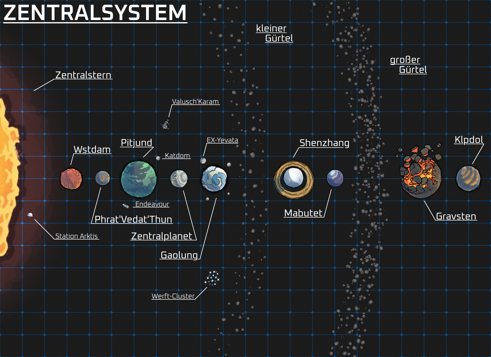

Endeavour of Man

Ein Sternensystem, welches vor Äonen von einer lange vergessenen Spezies erschlossen wurde, die die Gesetze der Realität selbst ihrem Willen unterwarfen.
Heute ist das Zentralsystem die Heimat von Dutzenden größeren und kleinen Völkern raumfahrender Spezies. Eine der jüngsten davon ist die Menschheit, welche vor fast zweihundert Jahren mit dem Kolonieschiff Endeavour eintraf und sich seitdem ihren Weg in diesem außergewöhnlichen Sternensystem sucht.
Planeten
Pitjund
Der größte der allgemein bewohnbaren Planeten rund um den Zentralstern ist eine Landschaft der Kontraste. Riesige Großstädte sind umschlossen von absolutem Ödland. Wechselhaftes Klima beschert genauso oft tosende Stürme wie perfektes Strandwetter. Der größte der vier Kontinente umspannt fast den gesamten Globus und ist doch in der Systemgesellschaft der am wenigsten Wichtige des Planeten.
Nahe des Äquators hängt die Endeavour in einem geostationären Orbit über Haven, der ersten und größten Stadt, welche die Menschheit im Zentralsystem selbst errichtet hat.
Katdom
Der größte Mond von Pitjund ist ein Paradies für skrupellose Konzerne und andere unlautere Interessen. Auf Pitjund selbst gibt es je nach Verwaltung unterschiedlich strikte Auflagen zu allgemeinen Rechten intelligenter Spezies oder Umweltschutz. Nach einem langen kalten Krieg mit vielen Parteien für die Kontrolle Katdoms, wurde unter Mitwirkung des Großen Kongresses ein Vertrag ausgehandelt, welcher Vertretern aller politischen Interessen Zugang zum Mond und dessen Ressourcen gewährt, aber gleichzeitig niemandem die Macht zur Rechtsprechung übertrug.
Zentralplanet
Der kleinste allgemein bewohnbare Planet des Systems ist doch gleichzeitig der wichtigste Angelpunkt aller politischen Geschehnisse rund um den Stern. Der in zweckgebundene Zonen eingeteilte Planet ist so Sitz der größten Konzerne, der wichtigsten Botschaften aller Völker und des Großen Kongresses intelligenter Spezies selbst. Nachdem viel zu lange fast alle Zonen der Politik, Industrie oder der Bevölkerung gewidmet waren, wurden in den letzten paar hundert Jahren wieder mehr Abschnitte für die Natur abgestellt, sodass eine selbst durch Terraforming nicht zu unterdrückende Klimakrise nun zumindest ausgebremst scheint.
Gaolung
Der zweitgrößte allgemein bewohnbare Planet des Zentralsystems hat die der drei Planeten größten Wassermassen. Dies ist auch der Grund warum die Amabee ihn nach ihrer Ankunft kolonialisierten und die einheimischen semi-intelligenten Spezies der Meere versklavten. Heute haben die Amabee ihre Kolonialgeschichte immer noch nicht vollständig abgelegt und es wird wohl immer unbekannt bleiben, welche ihrer semi-intelligenten Klientelspezies mit genug Zeit in die Reihen der intelligenten Spezies des Zentralsystems hätten aufsteigen können.
EX-Yevata
Der größte Mond von Gaolung unterliegt nach einem biochemischen Desaster vor fast 1000 Jahren einer konstanten Raumblockade, welche jeden Kontaktversuch mit dem Mond durch tödlichem Nachdruck verhindert. Die wahrscheinlich intelligenten Spezies des Mondes leben unter der Oberfläche verborgen, da größere Siedlungen auf der Oberfläche ohne Verzögerung durch Orbitalfeuer ausgelöscht wird. Sollte der damals verbreitete Virus jemals den Mond verlassen können, schwebt jedes Leben im Zentralsystem in Gefahr.
Orte
Die Endeavour
Das gigantische Kolonieschiff der Menschheit hat ihre Vertreter vor fast zweihundert Jahren in das Zentralsystem getragen. Heute hängt der Koloss aus Verbundmaterial in einem geostationären Orbit über Haven und wir noch immer genutzt. Die Kommandodecks des Schiffes dienen heute als eine Art politisches Forum für die verschiedenen Interessensvertreter und Fraktionen der Menschheit. Zur Kolonisierung von Pitjund wurde ein großer Teil der Lebenserhaltungstechnologie des Schiffes auf dem Planeten gelandet, sodass die, die auf dem Schiff zur Instandhaltung zurückblieben, plötzlich selbst kaum überleben konnten. Nachdem lange Zeit große Spannung zwischen den Bewohnern des Schiffes und Haven bestand, lies deren politische Vertretung die Endeavour gewaltsam stürmen. Ihre Bewohner wurden auf den Maschinendecks zusammengetrieben, in denen nun ein Netzwerk aus Slums liegt. Von Militärpolizei bewacht und daran gehindert, das Schiff zu verlassen, verrichten ihre Bewohner noch immer die Arbeit, die Endeavour instandzuhalten, doch viel Lohn bekommen sie dafür nicht.
Haven
Als erste Stadt welche die Menschheit nach ihrer Ankunft im Zentralsystem erbaut hat, ist Haven heute die größte Menschensiedlung im System. Die ausgedehnte Metropole wurde direkt unter der Endeavour auf der Oberfläche von Pitjund gegründet und wächst seitdem in alle Richtungen. Im Zentrum der Stadt ragen Wolkenkratzer in die Höhe, während sich in einem Ring um sie herum Industrieparks erstrecken. Dazwischen verteilt und insgesamt die meiste Fläche der Stadt einnehmend sind verschieden große Bezirke mit Wohn-, Kommerz- und Entertainmentvierteln, wobei die meisten dieser nach Systemstandard keine wirklichen Hochhäuser enthalten. Im wechselhaften Ödland rund um die Stadt gibt es eine Reihe kleinerer Siedlungen, welche nach der Ankunft auf Pitjund von Kolonisten gegründet wurden, die sich nicht der gleichen Verwaltung unterwerfen wollten, die schon für hunderte Jahre während der Raumodyssee der Endeavour das Sagen hatte.
Valusch'Karam
Nachdem sich vor fast 1000 Jahren aufgrund der zunächst illegalen Interdiktion von EX-Yevata durch Flotten der Valusch zwischen ihnen und den Metrplik ein tiefer politischer Graben aufgetan hatte, gründete eine breite Koalition der Valusch die Raumstation Valusch'Karam. Die mit riesigem Abstand größte Raumstation im Z-System befindet sich nicht im Orbit um einen Planeten, sondern um den Zentralstern selbst. Auf seinen Bahnen zwischen den Orbits von Pitjund und dem Zentralplanet dient die Station als Heimathafen der SysSec-Flotten und wird sonst größtenteils von Valusch bewohnt. Inzwischen lebt dort die größte Bevölkerung der Valusch neben dem Zentralplanet.
Spezies
Amabee
Diese amöbenartigen Wesen sind zumeist in Flüssigkeitstanks anzutreffen, in denen sie den Großteil ihres Lebens verbringen. Sie haben eine natürliche Fähigkeit, durch die Flüssigkeit extrem schnell und in vielen Strängen gleichzeitig zu kommunizieren, was sie zu Experten im Gebrauch von Fahrzeugen und Kontrollsystemen und häufig exzellenten Taktikern macht. Außerhalb der Tanks finden sich Amabee nur auf Gaolung, ihrem jetzigen Heimatplaneten, dessen langsame Loslösung vom Kolonialismus noch nicht beendet ist.
Mensch
Die Menschheit ist vor etwas weniger als zweihundert Jahren mit der Endeavour im Zentralsystem eingetroffen. Nachdem die neue Spezies von den etablierten Mächten sowohl begrüßt als auch gewarnt wurde, den Frieden zu wahren, hielt das mächtige Kolonieschiff zum ersten Mal seit der Zündung des Antriebs noch im Sonnensystem über einem Planeten inne. An diesem Ort hängt der Koloss noch heute, direkt über der Stadt Haven, welche von den Kolonist*innen nach ihrer Ankunft gegründet wurde. Inzwischen ist die Menschheit eine im System etablierte Spezies, die fast überall anzutreffen ist. Wahre, über die eigene Art hinausgehende politische Macht hat sie allerdings noch nicht erlangt, da sie trotz ihrer vielfältigen Fähigkeiten den vorherrschenden Spezies noch zu jung ist, um in der Gemeinschaft intelligenter Spezies große Verantwortung zu übernehmen.
Metrplik
Es ist unbekannt, vor wie langer Zeit die Metrplik in das Zentralsystem gereist sind. Ihr knospenartiger Torso sitzt auf einem flachen, sternförmigen Unterkörper, von dem 10 spinnenartige Beine ausgehen. An der Unterseite ihren Körpers liegt ihr Schnabel, umgeben von frei manipulierbaren Fühlern, welche feinmotorische oder sensorische Funktionen erfüllen können. Die Interessen der Metrplik machen den mächtigsten politischen Block im System aus, wobei sie aber aufgrund ihrer Vertreter auf allen Seiten überall im System keineswegs eine vereinte Fraktion sind.
Tirpin
Die Tirpin sind eine der einheimischen Spezies des Zentralsystems und natürliche Bewohner von Pitjund. Ihre Schaufelklauen, der schmaler Körperbau mit Schuppenhaut, ein großes Lungenvolumen und exzellente Orientierung per Gehör lassen sie sich in den Steppen des Planeten in Windeseile durch den Boden fortbewegen. Während viele Tirpin in den Großstädten des Planeten leben gibt es einen guten Teil der Bevölkerung, der ein Leben "nach den alten Sitten" im Ödland vorzieht. Während die meisten dieser Gemeinschaften friedlich sind, haben sich aus einigen davon mächtige Gangs oder Piratenbanden der Ödlande gebildet, welche auch in und rund um Haven operieren.
Valusch
Die Valusch sind eine Spezies geborener Jäger. Ihr Körper ist langgezogen wie der einer Schlange, doch ihre Kopf und ihr Fell gleichen einem Säbelzahntiger. Aus der Stirn sprießen ihnen kurze Hörner und ihren gesamten Körper entlang wechseln sich Paare von kraftvollen Beinen und flinken Armen ab. Nachdem die Valusch vor langer Zeit in das Zentralsystem immigriert sind, lebt der größte Teil ihrer Bevölkerung auf dem Zentralplanet und der gigantischen Raumstation Valusch'Karam, welche gleichzeitig die Hauptbasis der von Valusch dominierten systemweiten Sicherheitsbehörde SysSec ist.
Organisationen
Fixer
Individuen, die ohne viele Fragen zu stellen jeden Auftrag erledigen, ob auf dieser oder der anderen Seite des Gesetzes, gab es schon immer im Zentralsystem. Natürlich war es aber die Menschheit, die diese Tätigkeit professionalisierte. Heutzutage ist Fixer ein Beruf, der juristisch sehr schwer zu definieren ist, der umgangssprachlich aber keinerlei Zweifel zulässt. Die Netzwerke der Organisation, anonyme Austauschweise und Aufträge mit fraglicher Legalität sorgen dabei in fast jeder Legislaturperiode dafür, dass ein erneuter Vorstoß gemacht wird, die Praxis vollständig zu kriminalisieren. Interessanterweise sind es aber die alten und politisch stark etablierten Spezies des Systems, welche immer wieder kleinliche Einwände gegen die eine oder andere Formulierung erheben, sodass bisher alle Versuche scheiterten, die Fixer ein für alle Mal der Vergangenheit zu übertragen. Vielleicht haben die Valusch, G'zot, Amabee und Metrplik erkannt, welches Potential der lose Haufen effektiver Individuen mit mangelnden Skrupel ihren eigenen Interessen eröffnet.
SysSec
Diese Sicherheitsbehörde ist damit beauftragt, den Frieden im Weltraum des ganzen Zentralsystems zu sichern. Diesem Ziel geht sie mit Nachdruck und wenn nötig überwältigender Gewalt nach, wobei Spezialeinheiten mitunter jenseits der Zentralgesetze agieren, um ihren Auftrag zu erfüllen. Die Organisation untersteht der direkten Kontrolle des Großen Kongresses intelligenter Spezies, wobei ihre Abteilungen zum Schutz verschiedener Planeten jeweils eine komplexe Struktur überlappender Entscheidungsgewalt mit lokalen Regierungen aufweisen. Dieses Geflecht der Verantwortung und der Macht führt nicht selten dazu, dass die Behörde selbst ihren übergeordneten Zielen zuwider handelt, wenn es wieder mal einen großen Korruptionsskandal gab. Kein Skandal mehr ist der offensichtliche Einfluss, den die Valusch als Art insgesamt auf das Sicherheitsorgan haben, da Mitglieder ihrer Spezies allein gut ein Viertel aller Offiziere ausmachen, obwohl fast zwei Dutzend Arten insgesamt vertreten sind.
Der große Kongress Intelligenter Spezies
Die Legislatur des Zentralsystems besteht aus einem riesigen Parlament mit Mitgliedern, die auf unterschiedlichen Wegen ihr Mandat erhalten und entweder mit oder ohne Stimmrecht berufen werden. Manche Sitze werden demokratisch gewählt, manche durch administrative Berufung gefüllt während andere frei durch die Mitgliederspezies besetzt werden können, sodass es auch schon Dikdatoren gab, die gleichzeitig einen Sitz im Großen Kongress hatten. Kommt eine neue Spezies im Zentralsystem an und findet einen friedlichen Weg zur Ansiedlung, erhält sie zunächst Mandate ohne Stimmrecht. Nach einer gewissen Zeit und erst wenn sie bestimmte Meilensteine in der Niederlassung im System erreicht hat, erhalten die Mandate der Spezies Stimmrechte. Erst, wenn sie deutlich stärker in die Systemgesellschaft integriert ist, kann eine Spezies hoffen, dass einer ihrer Abgeordneten den Vorstand über ein Gremium erhält. Für eine Legislaturperiode die Leitung eines der großen Organe des Kongresses zu übernehmen - z.B. Zivilverwaltung, Rechtsprechung oder Erschließung von Ressourcen - zeigt dem ganzen Zentralsystem, dass die Spezies vollständig und nun mit den gleichen Rechten und Pflichten in die Gesellschaft eingegliedert ist.
Geschichte
Administration
Keine der momentan das Zentralsystem bewohnenden Spezies waren die ersten Entdecker der hiesigen Welten. Manche haben sogar ihre vollständige pseudo-genetische Entwicklung als native Spezies eines der Planeten durchgemacht und waren doch nicht die ersten, die das Licht des Sterns erblickt haben. Vor ihnen allen wurde das System bewohnt, genutzt und beherrscht von einer Zivilisation, die heutzutage nur noch als Administration bekannt ist. Ihre Vertreter, Nachfahren, Erben oder Nachfolger gibt es noch immer, doch nichts ist über sie öffentlich bekannt. Das einzige Wissen, welches allen jungen Wesen über die Administration eingepflegt wird, ist dass es sie immer noch gibt, und das ihre Autorität - sollte sie sie je einfordern - ungebrochen ist.
Physik
Noch weniger als über die Administration, ist über den Moment in der Geschichte des Universums bekannt, an dem buchstäblich die Gesetze der Physik gebrochen wurden. Heute lässt sich dieser Umstand nur noch durch die Existenz von Schlupflöchern und Widersprüchen in den Gesetzmäßigkeiten der Natur belegen. Gerade diese Schlupflöcher jedoch sind es, die das interplanetare Leben der Zivilisation des Zentralsystems zulassen. LT-Drives, künstliche Schwerkraft, impulslose Bewegung und viele andere allgegenwärtige Technologien könnte es nicht geben, wenn das eiserne Gesetz der Realität nicht an der einen oder anderen Stelle nachgeben würde, statt sich zu behaupten.
Zeit
Wer mit der Realität selbst zündelt, muss darauf gefasst sein, dass auch unerwartete Konsequenzen das Universum für immer mitbestimmen. Gerade die zeitliche Komponente des letzten Satzes wird aber dadurch in Frage gestellt, dass es so scheint, als würde etwas existieren - ein Wesen, eine Macht, ein Wille oder Anderes - was selbst nicht vom Zahn der Zeit berührt wird. Die Implikationen eines solchen Gedanken sind atemberaubend und er scheint absurd. Und doch hat die Wissenschaft immer wieder keine andere Erklärung finden können, als das dort draußen etwas war, ist und sein wird, was nicht so ist wie wir.
Technologie
LT-Drive
Der LT-Drive ist die Grundlage interplanetarer Zivilisation. Die Antriebsart für Raumschiffe fast aller Größen, welche Antimaterie nutzt, wird effizienter und effektiver, je weniger Materie in der Umgebung des von ihr aufgebauten Einflussfeldes zu finden ist. Einfach gesagt bedeutet dies, dass Schiffe gewaltige Distanzen durch den leeren Raum in Windeseile durchqueren können, rund um Planeten oder große Rauminstallationen aber mit viel niedrigeren Geschwindigkeiten operieren müssen.
Terraforming
Die drei allgemein bewohnbaren Planeten Zentralplanet, Gaolung und Pitjund sind alle mit Terraforming-Technologie der Administration versehen, was ihre zum Teil außerhalb der Goldilocks-Zone des Sterns liegende Position erklärt. Das Wissen der momentan das System kontrollierenden Spezies über die Administration ist begrenzt und so wird die uralte Technologie so wenig es nur geht verändert, selbst um sie zu reparieren oder in Stand zu halten. Wenig ist in der Öffentlichkeit über die Arbeitsweise der Technologie bekannt, doch allgemein einig ist man sich darin, dass sie tief im Mantel der Planeten installiert ist und den geschmolzenen Kern als Energiequelle für ihre unermüdliche Arbeit nutzt. Was passiert, sollte die Technik jemals zusammenbrechen oder die scheinbar endlose Kraft eines Kerns erschöpft sein, will sich niemand ernsthaft vorstellen.
Transbeds
Die im System allgegenwärtige Übersetzungstechnologie ist so zuverlässig, notwendig und sicher, dass sie inzwischen jedem menschlichen Baby kurz nach der Geburt operativ eingesetzt wird. Sie erlaubt die automatische Übersetzung und Replikation in eigener Sprache von Schrift, Klang, Fühlerbewegungen, Sporenausstößen und allen anderen Formen primärer Kommunikation der intelligenten Spezies des Systems. Nutzende können ihren eigenen Transbed anweisen, keine Übersetzungen mehr zur Verfügung zu stellen oder sogar die eigenen Aussagen vor anderen Transbeds in der Nähe zu verschleiern. Dieses Feature ist allerdings gedacht, um die eigene Privatsphäre zu wahren, nicht für absolute Sicherheit zu sorgen. Hacking der Geräte oder einfach eine manuelle Übersetzung sind immer möglich.
SafeSuits
Dünne, einteilige Ganzkörperanzüge mit einem einfachen Lebenserhaltungssystem für verschiedenste Spezies, die nur den Kopf oder analoge Körperteile unbedeckt lassen. Sollte ein rapider Druckabfall rund um den Anzug stattfinden, siegelt dieser sich automatisch vollständig ab und eine feste Plexmer-Blase wird um den Kopf des Trägers geschlossen. Dies ergibt einen rudimentären Raumanzug. Sehr begrenzte Bewegung in der Schwerelosigkeit ist durch Auslassventile im Anzug möglich, allerdings verbraucht diese Funktion das gleiche Gas, welches das Wesen im Anzug auch zum Überleben benötigt.
Und noch viel mehr ...
Das alles ist nur ein kleiner Einblick in das Zentralsystem. Es gibt mehr Planeten, mehr Spezies, mehr Organisationen und politische Mächte, mehr Intrigen, mehr Unrecht aber auch mehr bittere Gerechtigkeit, als vielleicht je zuvor in der Geschichte der Menschheit.